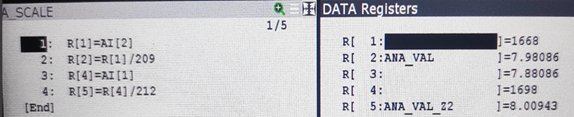

Analog backgauge sensor
Analog Backgauge Connection Diagram
The wiring diagram illustrates how two potentiometer-based analog sensors are connected to the robot controller’s analog input module.

-
Channel 1 - Connected to Z1 BG
-
Channel 2 - Connected to Z2 BG
Backgauge - Measurement Principle
Each back gauge protruder is mechanically coupled to a potentiometer. As the protruder moves, the potentiometer varies its resistance and produces a proportional analog signal and gives raw analog values:
-
Z1: Potentiometer reading for Backgauge 1
-
Z2: Potentiometer reading for Backgauge 2
The typical protruder length is approximately 7.5 mm.
Raw Register Assignment
-
R[1] → Raw value from analog input Z1
-
R[4] → Raw value from analog input Z2
Analog Value Scaling Logic
A background logic program named A_SCALE continuously processes the raw analog inputs and converts them into length (in mm).
Scaled Register Assignment
-
R[2] → Scaled length value for R[1] Backgauge 1
-
R[5] → Scaled length value for R[4] Backgauge 2

This logic performs the following functions:
-
Reads raw analog input counts from AI channels
-
Divides the raw values by predefined scaling factors
-
Stores the final backgauge position in millimetres.
-
The scaling constant (e.g., 209 or 212) is determined during calibration to match the mechanical range of the protruder to the analog signal range.